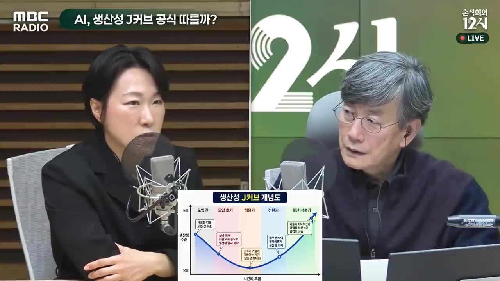

[손석희의 12시] AI, 생산성 J커브 공식 따를까? _김효진 신영증권 박사 | 한 걸음 더 들어가겠습니다 | MBC 261030
▶ 원본 영상 보기한눈에 보기
- 생산성 J커브는 혁신 기술이 처음에는 돈만 들고 생산성이 정체되다가, 시간이 지나면 가파르게 오르는 흐름을 말합니다.
- 김효진 박사(신영증권)는 생산성이 오르기까지 증기기관 80년, 전기 40년, 컴퓨터 20년이 걸렸다고 짚습니다. AI는 이보다 훨씬 짧을 것이라고 봅니다.
- 김 박사의 판단으로는 AI가 지금 J커브의 바닥에 있습니다. 구글·아마존은 AI 클라우드로는 돈을 벌었지만 광고·유통 같은 본업 실적이 기대에 조금 못 미쳤고, 이 실망이 증시 하락으로 이어졌다는 설명입니다.
- AI가 상승 곡선을 타려면 세 가지 조건이 필요합니다. 여러 산업에 두루 쓰일 것, 비용이 떨어질 것, 그 위에 새 혁신이 얹힐 것입니다. 피지컬 AI(로봇처럼 현실에서 움직이는 AI)로 얼마나 빨리 퍼지느냐가 관건이라고 봅니다.
- 일자리는 결국 늘겠지만, 이제 막 사회에 나오는 청년층이 출발점을 잡기 어려울 수 있다는 걱정이 있습니다.
이런 분께 도움이 됩니다
- AI 투자 거품 논란과 빅테크 실적 발표 뒤의 주가 하락을 역사 속 비슷한 사례로 이해하고 싶은 분
- AI가 언제부터 실제 생산성과 기업 수익으로 이어질지 판단할 기준을 찾는 투자자·직장인
핵심 내용
생산성 J커브란
- J커브는 알파벳 J를 오른쪽으로 45도쯤 기울인 모양입니다. 처음에는 아래로 움푹 꺼지고, 그 뒤 위로 길게 올라갑니다. (1:12, 3:32)
- 처음에는 새 시스템을 까는 데 돈이 많이 듭니다. 1을 투자해도 바로 1원, 2원을 벌지 못하고, 생산성이 오를지도 아직 장담할 수 없습니다.
- 시간이 지나 효과가 통계에 잡히기 시작하면 곡선이 가파르게 오릅니다.

💡 기술이 좋아도 초반에는 비용이 먼저 나가고, 수익은 늦게 따라온다.
지금 시장이 실망한 이유: 구글·아마존 실적
- AI 사업 자체는 돈을 잘 벌고 있습니다. 문제는 AI에 투자하는 기업들의 본업 실적이 기대에 못 미쳤다는 점입니다. (2:25)
- 구글: AI 클라우드는 좋았지만 본업인 광고(유튜브·유튜브 뮤직 등) 수입이 조금 부진했습니다.
- 아마존: 온라인 유통이 부진했습니다.
- 투자자들의 의문은 이렇습니다. AI가 투자한 만큼 바로 수익을 낸다면 본업도 좋아졌어야 하지 않느냐는 것입니다.
- 투자에는 천문학적인 돈이 듭니다. 본업이 삐끗하면 AI 투자가 느려질 수 있다는 걱정이 나왔고, 이것이 한국 증시를 5% 넘게 끌어내린 요인이라는 설명입니다. (3:11)
역사 속 J커브: 시차는 80년 → 40년 → 20년
🔁 혁신 기술이 생산성으로 잡히기까지 걸린 시간
- 증기기관 (80년)
- 전기 (40년)
- 컴퓨터 (20년)
- AI (?)
- 1증기기관 (80년)
1770년대 특허를 낸 뒤 생산성 통계에 뚜렷이 잡히기까지 약 80년이 걸렸습니다. (4:44)
- 처음에는 비싸고 연료도 많이 먹어서 탄광의 물을 퍼내는 데에만 쓰였습니다.
- 이후 철도·증기선으로 퍼지면서 경제 전체가 바뀌었습니다.
- 2전기 (40년)
에디슨이 1880년대 초에 발전소를 열었지만, 1900년에도 미국 동력 사용에서 전기모터 비중은 5%도 안 됐습니다. 널리 쓰인 것은 1920년대부터입니다. (5:08)
- 3컴퓨터 (20년)
노벨 경제학상 수상자 솔로는 "컴퓨터는 사무실마다 있는데 생산성 통계에는 안 잡힌다"고 했습니다(솔로의 역설). 효과가 통계에 잡히기까지 약 20년이 걸렸습니다. (9:05)
- 4AI (?)
시차가 공교롭게 절반씩 줄어 왔습니다. 진행자는 "이번엔 10년보다 짧아야 증시에 도움이 되겠다"고 덧붙였습니다.
AI의 시차가 짧아질 것이라는 근거
- 시차를 좁히는 조건은 세 가지입니다. 확산 속도, 이미 깔린 인프라를 쓸 수 있는지, 기득권이 방해하는지입니다. (6:43)
- 확산 속도: 증기기관이나 전기보다 훨씬 빠릅니다.
- 기존 인프라 활용: 전기모터로 바꿀 때는 공장을 통째로 뜯어고쳐야 투자금을 뽑을 수 있었습니다. AI는 이미 깔린 인터넷·컴퓨터·휴대폰을 그대로 씁니다.
- 기득권의 방해: 영국에 자동차가 처음 나왔을 때, 마차를 가진 기득권층이 의회에 로비해 법을 만들었습니다. 차 앞에서 사람이 깃발을 들고 경고하며 걸어가야 한다는 내용입니다. (7:57)
- 그 결과 도시에서는 시속 3km 넘게 달리지 못했습니다(자막 기준).
- 지금은 자본을 쥔 기득권인 빅테크가 오히려 AI 투자를 이끌고 있습니다.
💡 이번에는 기득권이 브레이크가 아니라 액셀이다. 그래서 시차가 크게 압축될 수 있다.
기술보다 중요한 것: 일하는 방식 바꾸기 (월마트 사례)
- 기술이 등장하는 것만으로는 부족하고, 그 기술을 쓸 수 있게 회사의 일하는 방식을 바꿔야 한다는 점을 월마트 사례로 설명합니다. (9:51)
- 월마트는 컴퓨터가 깔리고 인터넷이 시작되던 시기에 아래 일을 빠르게 해서 미국 유통업을 재편했습니다.
- 모든 제품에 바코드 도입
- 재고 전산화
- 판매량 정보를 납품업체와 연결해 판매량만큼 주문(지난주 방송에서 다룬 '채찍 효과'와 관련)
- 물류와 매장 운영 방식을 통째로 바꿈
- 그때 다른 회사들도 컴퓨터는 다 갖고 있었습니다. 차이를 만든 것은 컴퓨터를 잘 쓰도록 회사를 바꿨느냐였습니다. (11:03)
💡 기술이 있느냐보다, 기술에 맞춰 조직을 바꾸느냐가 생산성을 가른다.
AI는 지금 J커브의 어디쯤인가
- 정확한 위치는 지나 봐야 압니다. 다만 투자한 돈만큼 수익이 나지 않는 '바닥 국면'이라는 징후가 많다고 봅니다. (11:26)
- 하이퍼스케일러(대형 클라우드 빅테크) 4곳의 내년 투자액은 1조 달러를 넘을 것으로 보입니다. 한국 GDP가 약 2조 달러이니 그 절반 규모입니다. (11:50)
- 이들은 클라우드에서는 돈을 벌지만, AI가 접목돼야 할 광고·온라인 유통에서는 기대에 조금 못 미쳤습니다. 구글 주가는 며칠 만에 20% 가까이 떨어졌습니다. (12:38)
- 더 비관적으로 보면 "과연 올라가기는 하느냐"는 질문도 가능합니다. 그래도 다른 기술보다 짧은 시간에 빠르게 오를 것이라는 데는 김 박사를 포함해 많은 사람이 동의한다고 말합니다.
AI가 상승 곡선을 타기 위한 세 가지 조건
| 조건 | 뜻 | 지금 AI의 상황 |
|---|---|---|
| 범용성 | 한 산업이 아니라 여러 산업에서 쓰이는가 | 여러 산업에서 쓰이는 중 |
| 비용 하락 | 기술이 좋아지면서 싸지는가 | 토큰(AI가 글을 만들 때 쓰는 단위, 많이 쓸수록 돈이 듦) 비용이 2년 전의 1/10 이하로, 올해만 해도 절반 이하로 떨어짐 |
| 파급력 | 그 위에 새 혁신이 얹히는가 | 에이전트(스스로 일을 처리하는 AI), 피지컬 로봇, 신약 개발에서 연구와 일부 성과가 나옴 |
거품 논란은 늘 있었다
- 철도·증기기관·전기 모두 상승 곡선을 타기 전에 거품 논란을 겪었습니다. 오늘 1만 원을 넣으면 바로 벌기를 바라는 마음 때문에 기대가 늘 앞서갔다는 것입니다. (15:01)
- 금융 투기의 역사에서 철도 버블은 튤립 버블을 빼면 가장 컸습니다(자막상 '립'으로 나와 불분명하지만 튤립으로 보임).
- 아마존은 닷컴 붐 때 주가가 올랐다가 거품이 꺼지며 떨어졌지만, 지금도 온라인 유통 1위입니다. 첫 흑자는 닷컴 버블이 꺼진 뒤인 2003년이고, 그때까지 꾸준히 투자했습니다. (15:49)
💡 거품이 꺼져도 끝까지 투자한 기업은 살아남아 1위가 됐다.
피지컬 AI와 성장률: 엇갈리는 전망
| 학자 | 전망 |
|---|---|
| 애쓰모글루(Acemoglu, 노벨상 수상. 자막은 '2004년'이라고 했으나 실제 수상은 2024년) | 10~20년을 봐도 GDP를 0.1%도 못 올릴 것 |
| 아기옹(Aghion, 2025년 노벨 경제학상) | 1%포인트 이상 끌어올릴 수 있음 |
- 두 사람의 차이는 낙관이냐 비관이냐보다, AI의 파급력이 어디까지 미치느냐를 다르게 보는 데서 나옵니다. (16:35)
- 지금 AI는 대부분 컴퓨터에서 시작해 컴퓨터에서 끝납니다. 이것이 실물 경제, 즉 피지컬 AI로 얼마나 빨리 넘어가느냐가 관건이라고 봅니다. (17:00)
고용에 미칠 영향
기억할 숫자·인용
- 80년 / 40년 / 20년: 증기기관·전기·컴퓨터가 생산성 통계에 잡히기까지 걸린 시간
- 1770년대: 증기기관 특허 / 1880년대 초: 에디슨 발전소 / 1900년: 미국 동력 중 전기모터 비중 5% 미만 / 1920년대: 전기 본격 확산
- 1조 달러 이상: 빅테크 4곳의 내년 AI 투자 전망(한국 GDP 약 2조 달러)
- 5% 넘게: 이날 한국 증시 하락 폭 / 약 20%: 며칠 사이 구글 주가 하락 폭
- 1/10 이하: 2년 전보다 낮아진 토큰 비용(올해만 절반 이하)
- 2003년: 아마존 첫 흑자
- 시속 3km: 영국 '깃발법' 시절 도시 안 자동차 속도(자막 기준)
- 100% → 98%: 19세기 옷감 짜기를 손에서 기계로 바꾼 비율
- "컴퓨터는 어디에나 있는데 생산성 통계에는 안 잡힌다" — 솔로의 역설
생각해볼 점
- (영상 내용) 시차가 80→40→20년으로 절반씩 줄었다는 것은 진행자도 말했듯 '공교로운' 패턴입니다. AI가 10년 안에 성과를 낼 근거는 아닙니다. (내 의견) 확산 속도가 빠른 것과 기업이 일하는 방식을 바꾸는 속도는 다를 수 있습니다. 월마트 사례처럼 결국 조직이 바뀌어야 효과가 나기 때문입니다.
- (영상 내용) 토큰 비용이 떨어지면 사용이 늘어난다고 봅니다. (내 의견) 비용이 떨어지면 AI를 파는 빅테크의 단가와 수익성에는 부담이 될 수 있습니다. 1조 달러 투자를 회수하는 속도와는 따로 따져 봐야 합니다.
- (영상 내용) 증시와 투자 판단은 출연자의 시각입니다. (내 의견) 실적 한 분기만으로 '바닥 국면'인지 판단하기는 이릅니다. 다음 분기 본업 실적을 함께 봐야 합니다.
바로 해볼 일
- 구글·아마존의 다음 분기 실적에서 'AI 클라우드 매출'과 '본업(광고·유통) 매출' 증가율을 나란히 비교해 보기
- 내 업무에서 AI를 그냥 도구로 '얹기'만 했는지, 일하는 방식을 바꿨는지 한 가지 사례로 점검해 보기(월마트 사례 참고)
- 애쓰모글루와 아기옹의 AI 성장률 전망을 검색해 원문 수치를 확인해 보기